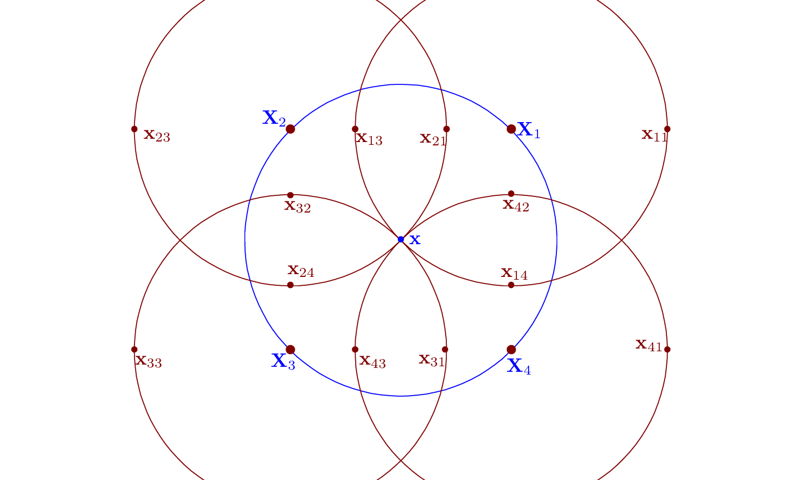
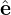

In Sec. 8, to evaluate the polarization density, the potential δΦ is Fourier expanded in space using local Cartesian coordinates, and then the double gyro-angle integration of each harmonic is expressed as the Bessel function. (It seems that the original motivation of using the Fourier expansion here is to facilitate analytical treatment and is not designed for numerical use. GEM code does make use of the local Fourier expansion in its numerical implementation, where the local perpendicular wave number needs to be estimated numerically, which seems awkward.)
In this section, we avoid using the local Fourier expansion, and directly express the double gyro-angle integral as linear combination of values of δΦ at spatial grid-points. The polarization density is given by Eq. (191), i.e.,
|
| (239) |
 | (240) |
Define
 | (241) |
Using dv = v⊥dv⊥dv∥dα, the above integration is written as
 | (242) |
where use has been made of the assumption that ‚àÇF0‚àï‚àÇùúÄ is uniform in Œ± in (x,v⊥,v∥,Œ±) coordinates, and thus is moved outside of the Œ± integration. Using the deÔ¨Ånition of gyro-averaging (2œÄ)−1 ∫ 02œÄ(‚Ķ)dŒ±‚Ä≤, the above integration is written as
|
| (243) |
Note that the gyro-averaging is performed in the guiding-center space, i.e., performed by varying the gyroangle α′ while keeping guiding-center position X, v⊥, and v∥ constant. Using the definition of δΦg (i.e., its relation with δΦ):
 | (244) |
where the particle location x is computed from the guiding-center location by
 | (245) |
then A(x) is written as
![A(x) ∫ ∫ ∫ [ ∫ ( ) ]
= − q- ∞ dv ∞ dv ∂Fi0v 2π dα -1- 2πδΦ X − v (v ,α ′)× e∥(X-) dα ′
m −∞ ∥ 0 ⊥ ‚àÇùúÄ ⊥ 0 2œÄ 0 ⊥ ⊥ Œ©(X)
∫ ∞ ∫ ∞ ∫ 2π ⌊ N2 ( ) ⌋
≈ − q- dv∥ dv⊥∂Fi0v⊥ dα⌈ 1--∑ δΦ X − v⊥(v⊥,α′)× e∥(X)- ⌉
m −∞ 0 ‚àÇùúÄ 0 N2 j=1 j Œ© (X)](nonlinear_gyrokinetic_equation270x.png)
Next, in order to perform the remaining velocity space integration, transform back to the particle coordinates (because the velocity integration is performed in the particle coordinates, i.e., it is performed by keeping the particle coordinate x constant):
For notation ease, define
 | (247) |
where Δρij is a function of (x,v⊥,αi,αj′). Then Eq. (246) is written as
The guiding-center transform and its inverse involved in the above are illustrated in Fig. 5, which also shows how to evaluate the double gyro-angle integration using the discrete values of δΦij. 

 ≈
≈  ∑
i=1N1 ∑j=1N2δΦ(xij), where
N1 = 4,N2 = 4 for the case shown here.
∑
i=1N1 ∑j=1N2δΦ(xij), where
N1 = 4,N2 = 4 for the case shown here.The spatial points xij appearing in Eq. (5) are not necessarily grid points. Linear interpolations are used to express δΦ(xij) as linear combination of values of δΦ at grid-points.
Assume that F0 is Maxwellian, then
 | (249) |
Note that Δρij is independent of v∥. Then the integration over v∥ in Eq. (248) can be analytically performed, yielding
where v∥ = v∥∕vt, v⊥ = v⊥∕vt,  vt = , and use has been made of
 | (251) |
In field-aligned coordinates (x,y,z), Fourier expansion of δΦ along y is written
|
| (252) |
where ι =  , Nt is the number of toroidal harmonics included. Use this in Eq. (250), yielding
, Nt is the number of toroidal harmonics included. Use this in Eq. (250), yielding
|
| (255) |
which should be a good approximation since the variation of δΦ along a field line over a distance of a Larmor radius is small. Then expression (254) is written as
![∫ ∞ - - (− v2)
An(x,z) ≈ n0 dv⊥v⊥exp ---⊥
0[ ( 2) ]
1--N∑1 -1-N∑2 2π- q-
× N1 N2 exp ιn LyΔ ρijy TδΦn (x + Δρijx,z) . (256)
i=1 j=1](nonlinear_gyrokinetic_equation285x.png)
The integration we try to express is given by


 
 


![∫ ( - )
A(x) = n ∞ dv v exp −v2⊥-
0 0 ⊥ ⊥ 2
N∑1 ∑N2[ N∑t ( ) ]
× -1- -1- q- exp ιn 2π(y+ Δ ρijy) δΦn (x+ Δ ρijx,z + Δρijz)
N1 i=1N2 j=1 T n=−Nt Ly
∑Nt ( )∫ ∞ ( -2)
= n0 exp ιn2π-y dv⊥v-⊥exp −-v⊥
n=−Nt Ly 0 2
N∑1 ∑N2[ ( ) ]
× -1- -1- exp ιn2πΔ ρijy q-δΦn(x+ Δ ρijx,z + Δ ρijz) . (253)
N1 i=1N2 j=1 Ly T](nonlinear_gyrokinetic_equation282x.png)